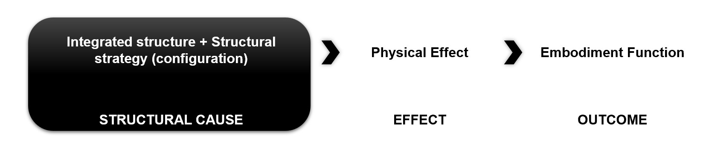
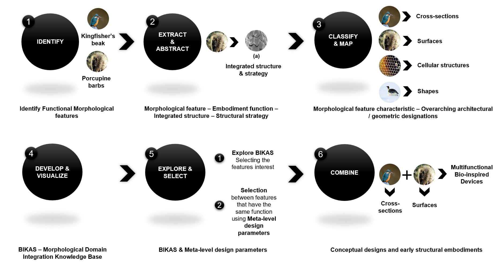
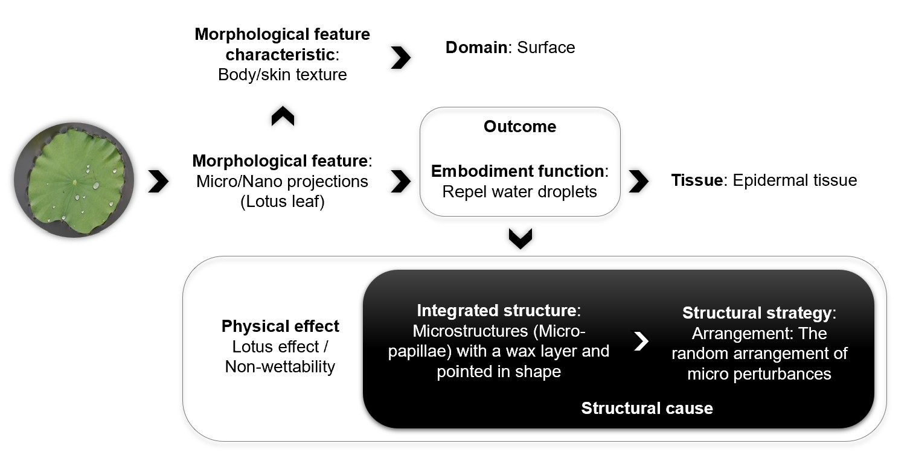

The DID and xDID methodologies are built on the structured classification, domain mapping, and systematic integration of functional morphological features derived from biological organisms. They focus on exploring morphological features across defined geometric Domains rather than isolated biological examples. By organising features according to their architectural characteristics and abstracting their underlying geometric logic, the framework enables the systematic development of novel multifunctional design concepts
Biological function arises from the interaction of morphology, physiology, and behaviour. DID and xDID methodologies explicitly focus on functions that originate from morphological structure. These morphology-derived functions are defined as embodiment functions
An embodiment function arises from the integrated structure and its configuration. These structural arrangements generate specific physical effects that give rise to function. DID and xDID focus on abstracting the underlying geometric logic that governs these structure–effect relationships

Distantly related organisms, despite distinct evolutionary paths, frequently converge on similar structural designs to perform the same functions. The DID and xDID use this principle to explore morphological diversity across both plant and animal kingdoms, expanding the available design space for engineering problems.

1. IDENTIFY functional morphological features from biological organisms.
2. EXTRACT the embodiment function performed by the morphological feature. ABSTRACT the embodiment function as a combination of the integrated structure and its structural strategy.
3. CLASSIFY morphological features based on their defining characteristics and MAP them to overarching geometric/architectural Domains: Surfaces, Cellular Structures, Shapes, and Cross-Sections.
For example, the morphological feature of micro-scale projections on the lotus leaf exhibits the embodiment function of water repellence. This function arises from the integrated structure formed by hierarchical surface architecture composed of micro- and nano-scale projections and the associated structural strategy governing their arrangement and spacing. The material composition, particularly the presence of a hydrophobic wax layer, further contributes to this functionality. Within the DID and xDID framework, this feature is characterised as a body or skin texture and is mapped to the overarching geometric/architectural Domain of Surfaces.

In this research, the focus is on abstracting and mapping the structural cause, defined by integrated structure and structural strategy to the physical outcome (repel water). The observed effect arises through an underlying physical effect, commonly described as the lotus effect or non-wettability, which is acknowledged but not explicitly modelled within this framework.
Geometric Basis of Classification: Cross-Sections and Shapes Domains may contain surface and cellular elements; however, classification is determined by the dominant morphological–geometric characteristic through which the function is realised.
4. DEVELOP a morphological knowledge base and VISUALIZE relationships between morphological features, embodiment functions, integrated structures, and structural strategies.
5. EXPLORE and SELECT embodiment functions and corresponding morphological features within Domains. Meta-level design parameters are used to select between features that exhibit the same function and belong to the same Domain.
6. COMBINE the selected features across Domains to design passive multifunctional bio-inspired device concepts.
a. Biological morphological features: Morphological and anatomical features observed in the plant and animal kingdoms.
b. Morphological features characteristic: The observable appearance, form, and physical attributes of a feature.
c. Embodiment function: The function exhibited by a physical structure as realised through its morphology.
d. Integrated structure: The physical description of the internal multiscale, heterogeneous structure, including micro- and nanostructures, macro-scale geometry, and surface layers such as wax coatings.
e. Structural strategy: Encompasses aspects such as the arrangement, packing, or orientation of micro/nanostructures, symmetry, asymmetry, or tessellation patterns. It also accounts for changes in structural configuration due to external stimuli, such as the erection of scales or a change in skin compliance, which occur when other elements interact with the structure.
f. Domain: The overarching geometric/architectural designation used to organise morphological features.
g. Meta-level design parameters: Quantitative geometric parameters used to select between morphological features that belong to the same Domain and exhibit the same function. These parameters are validated through simulation-based case studies.
The parameters by domain are: Surfaces: Interaction area; Cellular Structures: Interaction area, porosity; Shapes: Scale; Cross-Sections: Scale.
In addition there are cross-domain selection parameters used when features from different Domains exhibit the same function. The identified parameters are Surface area-to-volume ratio; Stiffness-to-weight ratio.
Reference for the babrs microscopic image:
(a) W.K. Cho, J.A. Ankrum, D. Guo, S.A. Chester, S.Y. Yang, A. Kashyap, G.A. Campbell, R.J. Wood, R.K. Rijal, R. Karnik, R. Langer, & J.M. Karp,
Microstructured barbs on the North American porcupine quill enable easy tissue penetration and difficult removal,
Proc. Natl. Acad. Sci. U.S.A. 109 (52) 21289-21294, https://doi.org/10.1073/pnas.1216441109 (2012)
RELATED PUBLICATIONS
1. Velivela, P.T. and Zhao, Y.F., 2024. BIKAS: Bio-Inspired Knowledge Acquisition and Simulacrum—A Knowledge Database to Support Multifunctional Design Concept Generation. Data Intelligence, pp.1-28. DOI: https://doi.org/10.1162/dint_a_00240
2. Velivela, P.T. and Zhao, Y.F., 2023. Supporting Multifunctional Bio-Inspired Design Concept Generation through Case-Based Expandable Domain Integrated Design (xDID) Model. Designs, 7(4), p.86. DOI: https://doi.org/10.3390/designs7040086
3. Velivela, P.T. and Zhao, Y.F., 2022. A Comparative Analysis of the State-of-the-Art Methods for Multifunctional Bio-Inspired Design and an Introduction to Domain Integrated Design (DID). Designs, 6(6), p.120. DOI: https://doi.org/10.3390/designs6060120 (Feature paper)

Copyright © 2026 ADML McGILL University. All rights reserved.